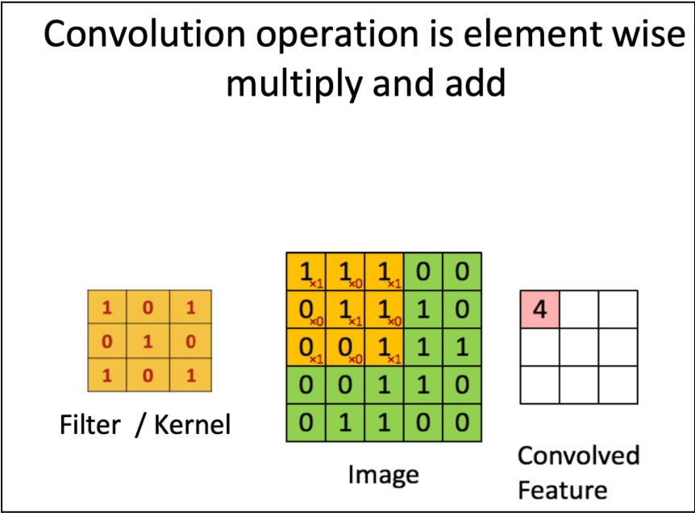
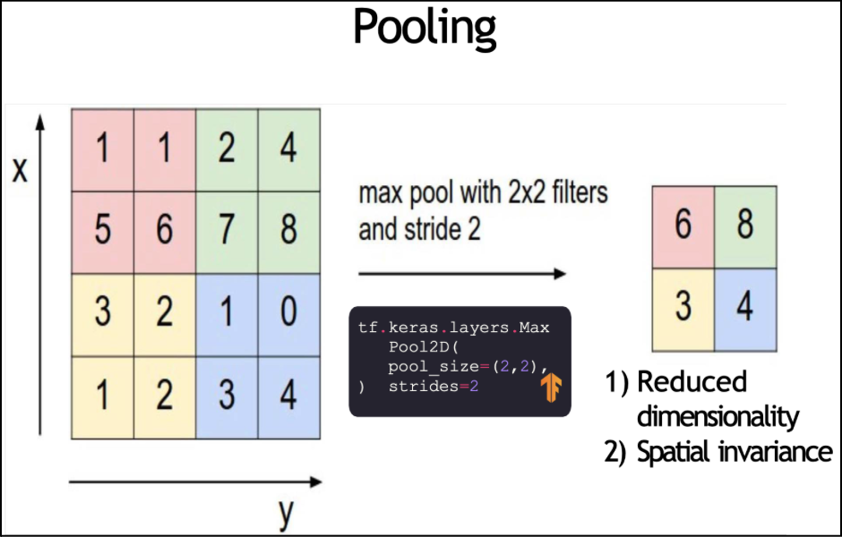
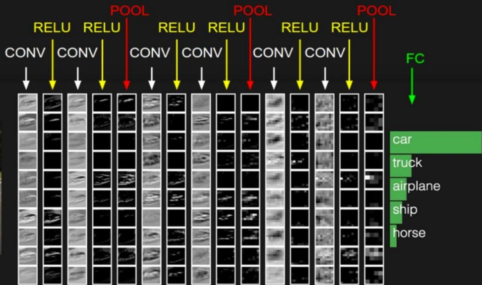

library(keras)
library(tensorflow)
library(ggplot2)
library(caret)
library(dplyr)
library(reticulate)
library(pROC)
library(readr)
library(fs)
library(rsample)
library(tidyverse)vignette-cnn.qmd
Authors: Lucas Childs, Kaeya, Sophie, Janice
The topic of our vignette is image classification in the medical setting. We’ll demonstrate using a Convolutional Neural Network (CNN) to classify brain tumor X-ray images into 2 classes: Cancer and Not Cancer. This binary image classification is a classic use-case of how CNNs can be applicable in the medical setting.
Conceptual Overview
Lucas’ Section
Before CNNs were developed, the standard way to use a Neural Network to train an image classifier was to flatten images into a list of pixels and pass it through a feed-forward neural network in order to predict the class of the image. However, the spatial information of the images are lost with this technique.
CNNs were designed to process Euclidean spaces, treating images as a grid of pixels. They’re able to process images using convolution, which uses a filter to scan one segment of the image grid at a time. The filter is a set of weights (e.g. of size 3x3) that is slid across the image grid, calculating the dot product of the filter and the image at different locations. The output is a feature map, which each filter outputs, each looking for different features.

For example, one convolutional layer in a CNN can have multiple filters, each looking to extract different aspects of the brain x-ray image (e.g. horizontal edges, vertical edges, color contrasts). The key idea is that parameters are shared: the filter with its weights is slid across the entire image, not just part of it, so these weights are essentially shared with the whole input image instead of assigning a parameter to learn each pixel of the image. Thus, convolution helps to generalize features across the whole image field making CNNs robust to variations in the location of objects and to reduce the number of trainable parameters of the Neural Network (reduction to the number of filter weights instead of learning separate weights for each location).
After each convolution operation (convolutional layer of the network), nonlinearity is applied so the network can learn complex nonlinear patterns. We typically use ReLu as an activation function, which is done before feeding all the feature maps learned in the previous layer to the next convolutional layer.
Additionally, CNNs do pooling as downsampling to reduce the size of the data, where feature maps are essentially subsampled. Each subsample is turned into a single pixel value with max pooling or average pooling, taking the maximum pixel value or average pixel value.

Finally, after convolution, nonlinearity, and pooling, the final two layer of a CNN include flattening and the fully connected (or Dense) layer. Flattening takes the resulting feature maps and flattens them to a 1-dimensional vector so that they can be used by the final layer to make class predictions. The fully connected layer is fed this 1-dimensional vector and activated with the sigmoid (our use-case) or softmax functions depending on binary or multiclass classification.

Popular CNN architectures include VGGNet and ResNet (up to 152 layers), with ResNet considered as state of the art. For the purpose of this demonstration, we will introduce a basic CNN with 3 convolutional layers (10 total).
Janice’s Section
Why comparing to traditional NN, CNN work better in our case
In a traditional fully connected neural network (NN), each neuron in one layer connects to every neuron in the next layer, leading to an explosion of parameters. For high-dimensional data like genomic data or medical images (this is the exact case for our project), this will be computationally infeasible and prone to overfitting. However, the convolution operation solves this through parameter sharing. Instead of learning separate weights for every pixel position, a convolutional layer uses a small set of learnable filters (or kernels) that are slid across the entire input image.
Specifically, in our brain tumor detection context, this parameter sharing feature allows the CNN model to efficiently learn fundamental visual patterns from MRI slices without requiring an impossibly large dataset or computational power. It enforces the model to focus on what features are present rather than memorizing their exact spatial coordinates.
Hierarchical Feature Learning
A CNN model does not process an image all at one time. Instead, it builds a hierarchical representation through successive layers, imitating the progressive complexity of the human visual system.
Early Convolutional Layers:
The first layers are primed to learn the most basic building blocks of visual data. Their small filters act as feature detectors for simple patterns: oriented edges (horizontal, vertical, diagonal), color transitions, blobs, and basic textures. In an MRI scan, these correspond to the gradients between white matter, gray matter, and cerebrospinal fluid, or the initial texture of tissue.
Middle Convolutional Layers:
As we go deeper, the network combines the simple features from earlier layers into more complex structures. Neurons in these layers might respond to combinations of edges and textures that form shapes like curves, corners, or specific repetitive patterns. For brain tumor analysis, these layers could learn to identify common radiological “parts” such as a mass border, an enhancing rim, or patterns of edema surrounding a lesion.
Late Convolutional Layers:
The final convolutional layers assemble the mid-level parts into complete, semantically meaningful objects. Here, the feature maps become highly abstract and task-specific. A neuron might activate strongly for the overall spatial configuration and texture that defines a specific tumor type or for the distinct morphology of a tumor versus healthy tissue.
Pooling: dimentionality reduction
Pooling layers (typically Max Pooling or Average Pooling) are strategically placed between convolutional layers and serve two primary purposes.
First, pooling reduces the spatial dimensions of the feature maps while preserving the most critical information. For example, a 2x2 Max Pooling operation takes the maximum value from a 2x2 grid, reducing the feature map size by 75%. This progressively decreases the number of parameters and computations in the network, controlling computational cost and mitigating overfitting.
Second, by summarizing a local region, pooling makes the network less sensitive to the exact position of a feature. A small shift or distortion in the location of a detected edge pattern will likely still fall within the same pooling region, and thus the pooled output remains unchanged. This helps the network generalize better—a tumor’s precise pixel location is less important than its relative structure and context.
In our project, pooling is crucial. It ensures that the model focuses on the presence of key diagnostic features (like a tumor’s enhancing region) rather than their exact, sub-pixel coordinates, which can vary due to differences in patient positioning or image acquisition.
Code Demo
Environment / Data Setup
We first start by loading the libraries necessary to run a CNN.
We then upload the data. The dataset that we use contains labeled medical MRI brain scans used for tumor classification (binary variable). Each row represents a single image and includes ifnormation about the file including the name of the image, the class (tumor or normal), the format (png, jpeg, tif), the RGB color mode, and the shape/resolution of the image.
metadata <- read_csv("data/metadata.csv.xls")
head(metadata)
colnames(metadata)We split the dataset into an 80/20 train–test split.
set.seed(11272025)
train_index <- createDataPartition(metadata$class, p = 0.8, list = FALSE)
train_data <- metadata[train_index, ]
test_data <- metadata[-train_index, ]
nrow(train_data)
nrow(test_data)After we have split the dataset, we create directories to store our training and testing brain scan images.
dir_create("data/images", showWarnings = FALSE)
dir_create("data/train_images")
dir_create("data/test_images")
# Copy each file based on split into training and test sets
file_copy(
path = paste0("data/images/", train_data$image),
new_path = paste0("data/train_images/", train_data$image)
)
file_copy(
path = paste0("data/images/", test_data$image),
new_path = paste0("data/test_images/", test_data$image)
)Preprocessing
Because neural networks require all input images to have the same dimensions, we resize all images to a target size of 224x224. We also set the batch size to 32. The batch size controls how many images the model processes at each training step before updating its weights. Processing the images in smaller batches helps improve training stability and efficiency.
img_height <- 224
img_width <- 224
batch_size <- 32The image generator loads training images and applies data augmentation like rotating or shifting the image. Augmentation increases the diversity of the training set, helping the model avoid overfitting and improving its ability to generalize new images.
train_gen <- image_data_generator(
rescale = 1/255,
rotation_range = 10,
width_shift_range = 0.1,
height_shift_range = 0.1,
horizontal_flip = TRUE
)We also create a testing generator with no augmentation of images so that the model is tested on clean data.
test_gen <- image_data_generator(rescale = 1/255)The flow_images_from_dataframe() reads in the images in batches from the training and test folders, apply the respective preprocessing (resizing and augmentation if needed), and record the corresponding true labels from the uploaded data.
train_flow <- flow_images_from_dataframe(
dataframe = train_data,
directory = "data/train_images",
x_col = "image",
y_col = "class",
generator = train_gen,
target_size = c(img_height, img_width),
batch_size = batch_size,
class_mode = "binary"
)
# flow images from the test dataframe
test_flow <- flow_images_from_dataframe(
dataframe = test_data,
directory = "data/test_images",
x_col = "image",
y_col = "class",
generator = test_gen,
target_size = c(img_height, img_width),
batch_size = batch_size,
class_mode = "binary",
shuffle = FALSE
)Build CNN Model
This CNN has three layers for feature extraction starting with simple edges/textures, and then moving to more complex patterns. After this, the model uses flatten layer and then dense layer to combine the features. There is also a dropout layer to reduce overfitting and help the model better generalize. Finally, theres a sigmoid output layer to generate aprobability between 0 and 1, allowing the model to perform binary classification.
model <- keras_model_sequential(list(
# 32 convolution filters of size 3x3
layer_conv_2d(filters = 32, kernel_size = 3, activation = "relu",
input_shape = c(img_height, img_width, 3)),
layer_max_pooling_2d(pool_size = 2),
# 64 filters
layer_conv_2d(filters = 64, kernel_size = 3, activation = "relu"),
layer_max_pooling_2d(pool_size = 2),
# 128 filters
layer_conv_2d(filters = 128, kernel_size = 3, activation = "relu"),
layer_max_pooling_2d(pool_size = 2),
# Flatten and dense layers
layer_flatten(),
layer_dense(units = 128, activation = "relu"),
layer_dropout(rate = 0.4),
# Output layer
layer_dense(units = 1, activation = "sigmoid")
))
# Compile the model
model$compile(
optimizer = "adam",
loss = "binary_crossentropy",
metrics = list("accuracy")
)
modelTrain CNN Model
The model is then trained for 15 epochs using the training generator. During each epoch, the model is also evaluated on the test generator, and both the training loss and accuracy and test loss and accuracy are reported.
epochs <- 15
history <- model$fit(
train_flow,
steps_per_epoch = r_to_py(as.integer(ceiling(nrow(train_data) / batch_size))),
validation_data = test_flow,
validation_steps = r_to_py(as.integer(ceiling(nrow(test_data) / batch_size))),
epochs = r_to_py(as.integer(epochs))
)
# Convert Python history to R list
history_values <- py_to_r(history$history)We then plot the loss and accuracy for each epoch.
plot(1:epochs, history_values$loss, type = "l", col = "blue", lwd = 2,
xlab = "Epoch", ylab = "Loss", ylim = range(c(history_values$loss, history_values$val_loss)))
lines(1:epochs, history_values$val_loss, col = "red", lwd = 2)
legend("topright", legend = c("Training Loss", "Validation Loss"),
col = c("blue", "red"), lwd = 2)plot(1:epochs, history_values$accuracy, type = "l", col = "blue", lwd = 2,
xlab = "Epoch", ylab = "Accuracy", ylim = range(c(history_values$accuracy, history_values$val_accuracy)))
lines(1:epochs, history_values$val_accuracy, col = "red", lwd = 2)
legend("bottomright", legend = c("Training Accuracy", "Validation Accuracy"),
col = c("blue", "red"), lwd = 2)Sophie’s Section
Evaluating the Model
scores <- model$evaluate(test_flow)
# Convert Python evaluation output to R list
scores_r <- py_to_r(scores)
test_loss <- scores_r[[1]]
test_accuracy <- scores_r[[2]]
cat("Test loss:", test_loss, "\n")
cat("Test accuracy:", test_accuracy, "\n")This section evaluates the trained CNN on the test dataset to measure how well it generalizes to unseen images. The model$evaluate() function computes two key metrics: test loss, which measures overall prediction error, and test accuracy, which measures the proportion of correctly classified images. By converting the Python output into an R list, we extract and print these values. A high accuracy value of 0.9075081 and generally low loss value of 0.2428377 indicate that the model has learned meaningful patterns from the training data and performs reliably on new samples from the test data.
Confusion Matrix
# Get predicted probabilities
pred_probs <- model$predict(test_flow)
# Convert probabilities to class labels (0 or 1)
pred_labels <- ifelse(pred_probs >= 0.5, 1, 0)
true_labels <- test_flow$classes
cm <- caret::confusionMatrix(factor(pred_labels), factor(true_labels),
positive = "1")
# Plot confusion matrix heatmap using ggplot
cm_df <- as.data.frame(cm_table)
colnames(cm_df) <- c("Predicted", "Actual", "Freq")
p_cm <- ggplot(cm_df, aes(x = Actual, y = Predicted, fill = Freq)) +
geom_tile() +
geom_text(aes(label = Freq), color = "white", size = 6) +
labs(title = "Confusion Matrix", x = "Actual", y = "Predicted") +
theme_minimal()
p_cm
ggsave("img/confusion_matrix.png", plot = p_cm, width = 6, height = 5)Along with computing test accuracy and loss, we can also assess model performance at the prediction level by examining the confusion matrix, which shows how many images were correctly or incorrectly classified. First, predicted probabilities are converted into binary labels (0 or 1 for tumor vs. no tumor), and these are compared to the true labels from the test set. The caret::confusionMatrix() function provides precision, recall, sensitivity, specificity, and an overall accuracy score. To make the results easier to visualize, we convert the confusion matrix into a dataframe and generate a heatmap with ggplot2. This visualization highlights where the model succeeds and where it makes mistakes, helping diagnose model weaknesses or class imbalance. As we can see from the visualization, our model correctly identified 489 images with tumors, and 345 images without tumors. Additionally, the model only misclassified a small amount of images, incorrectly classifying 72 images to have a tumor when they didn’t, and 13 images to not have a tumor when they in fact did. The confusion matrix indicates that the model correctly classified the majority of images, resulting in a high overall accuracy despite some misclassifications. Moreover, in a medical context, the model’s tendency to flag more false positives than false negatives is preferable, as it errs on the side of caution by reducing the risk of missing actual tumor cases.
ROC Curve and AUC
roc_obj <- roc(response = true_labels, predictor = as.numeric(pred_probs))
auc_val <- auc(roc_obj)
cat("AUC:", auc_val, "\n")
# 0.9750686
png("img/roc_curve.png", width = 900, height = 700)
plot(roc_obj)The ROC curve provides a visual summary of the model’s ability to distinguish between tumor and non-tumor images across all possible classification thresholds. By plotting sensitivity (true positive rate) against 1 – specificity (false positive rate), the ROC curve illustrates how the model’s performance changes as the decision threshold shifts, highlighting the trade-off between capturing more true tumors and avoiding false alarms. The curve demonstrates strong separation between the two classes, and the resulting AUC value of 0.975 indicates excellent discriminatory performance, meaning the model can correctly rank tumor images above non-tumor images with very high probability.
Saving the Model
dir_create("results")
model$save("results/cnn_brain_tumor_model.keras")
cat("Model saved to results/cnn_brain_tumor_model.h5\n")Finally, we save the trained CNN model so it can be reused without needing to retrain it. We created a results/ folder and save the model in .keras format, which preserves both the architecture and the trained weights. Saving the model ensures that it can be loaded later for inference, further training, or deployment in a clinical or research workflow. This also makes the results reproducible and portable across systems.